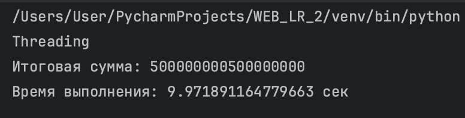
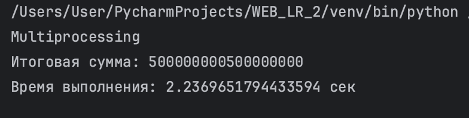
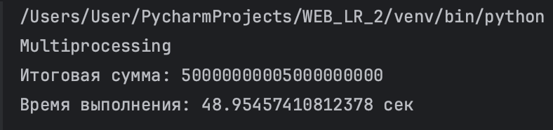
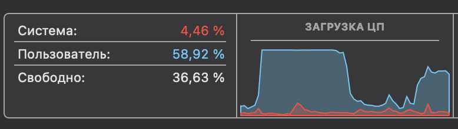
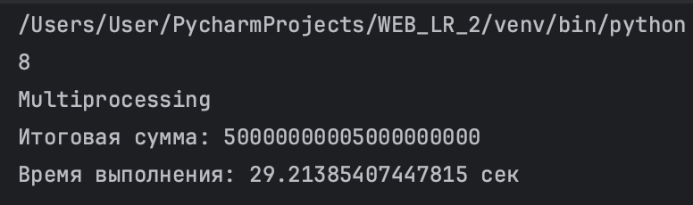
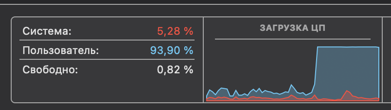
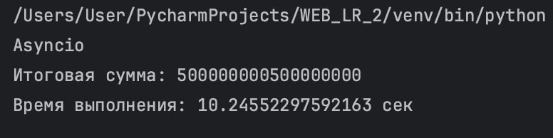
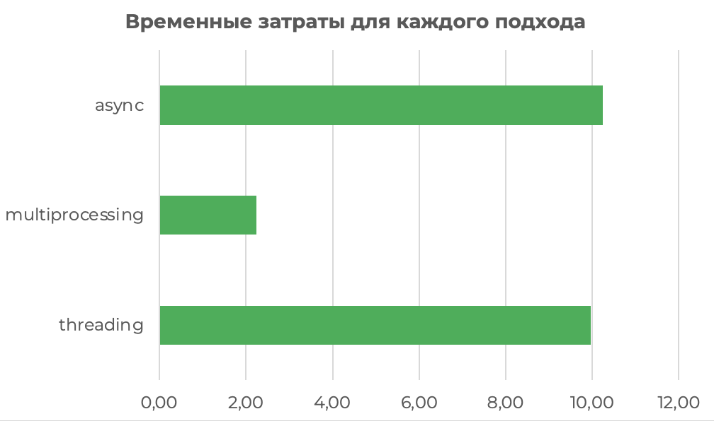

Задание №1. Различия между threading, multiprocessing и async в Python
Цель:
В рамках данного задания необходимо было написать три различных программы на Python, использующие каждый из подходов: threading, multiprocessing и async. Каждая программа должна считать сумму всех чисел от 1 до 10^9.
Ход работы:
Рассмотрим реализацию каждого подхода:
1.Threading. Через строго равные промежутки времени происходит попеременное переключение то на одну, то на другую задачу.
import threading
import time
def partial_sum(start, end, result, index):
result[index] = sum(range(start, end))
def calculate_sum():
num_threads = 4
maximum = 10**9
step = maximum // num_threads
threads = []
results = [0] * num_threads
for i in range(num_threads):
start = i * step + 1
if i != num_threads - 1:
end = (i + 1) * step + 1
else:
end = maximum + 1
t = threading.Thread(target=partial_sum, args=(start, end, results, i))
threads.append(t)
t.start()
for t in threads:
t.join()
return sum(results)
В результате получаем:

2.Multiprocessing. Вычисления идут параллельно
import multiprocessing
import time
def partial_sum(start, end, result, index):
result[index] = sum(range(start, end))
def calculate_sum():
num_processes = multiprocessing.cpu_count()
maximum = 10**9
step = maximum // num_processes
manager = multiprocessing.Manager()
processes = []
results = manager.list([0] * num_processes)
for i in range(num_processes):
start = i * step + 1
if i != num_processes - 1:
end = (i + 1) * step + 1
else:
end = maximum + 1
process = multiprocessing.Process(target=partial_sum, args=(start, end, results, i))
processes.append(process)
process.start()
for process in processes:
process.join()
return sum(results)
Сначала посомтрим на результаты при стандартном наборе входных параметров:

Далее в рамках этого подхода проведем небольшое исследование. Попробуем посомтреть на изменение работы кода при корректировке переменной num_processes, которая как раз-таки распределяет наш процесс на потоки. Начнем с 4х ядер:


А затем посмотрим на 8 ядер (максимальное количество):


Можно сразу заметить сильный разброс во времени и в суммарной нагрузке на ЦП. Увеличив величив num_processes с 4 до 8, мы задействовали все ядра (и производительности, и эффективности). Время работы сильно сократилось, а это значит, что наша задача хорошо масштабируется по ядрам и реально выигрывает при использоании multiprocessing.
3.Asyncio
import asyncio
import time
async def partial_sum(start, end):
return sum(range(start, end))
async def calculate_sum():
num_tasks = 4
maximum = 10 ** 9
step = maximum // num_tasks
tasks = []
for i in range(num_tasks):
start = i * step + 1
if i != num_tasks - 1:
end = (i + 1) * step + 1
else:
end = maximum + 1
task = asyncio.create_task(partial_sum(start, end))
tasks.append(task)
results = await asyncio.gather(*tasks)
return sum(results)
В результате получаем:

Теперь посомтрим на график распределения времени для каждого процесса при 10^9 и 4х потоках:

Вывод:
Multiprocessing получился самым эффективным способом в рамках задачи. В Python есть ограничение, называемое GIL, которое мешает потокам работать одновременно. Но процессы в multiprocessing GIL не ограничивает, поэтому это круто работает для тяжёлых задач — типа вычислений, обработки видео или изображений. Также каждый процесс может параллельно использовать ядра процессора. В результате — значительное ускорение.
Threadings занимает второе место. Достаточно медленный из-за GIL. Тут параллельности нет (и ускорения тоже), в итоге задачи исполняются по очереди.
Async - третье место. Тут тоже идет последовательное исполнение, нет ускорения, ну и асинхронность в нашей задаче ничего не даёт, потому что нет операций, которые можно "ждать".